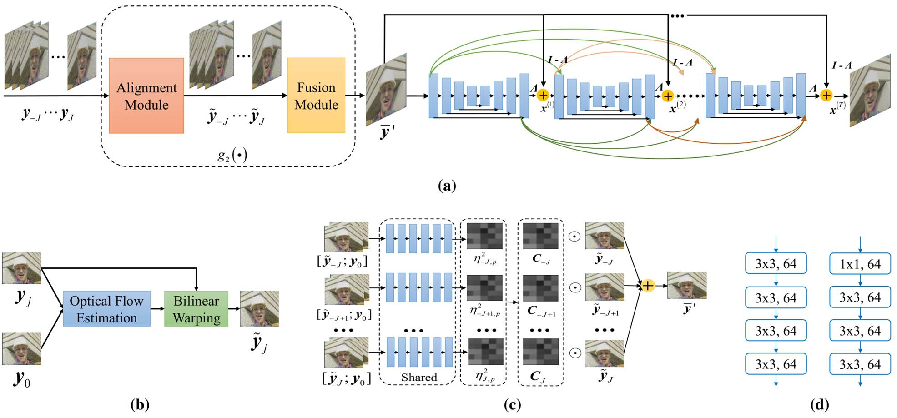
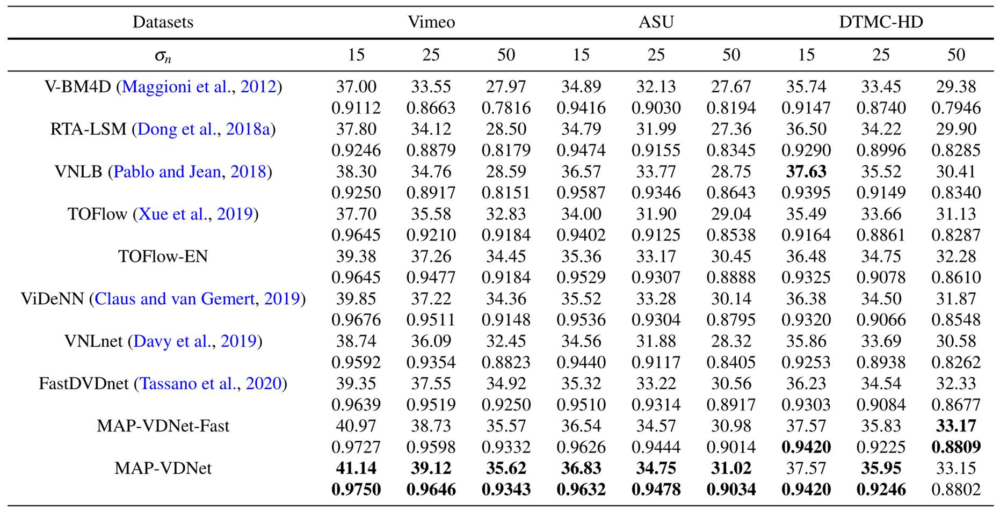
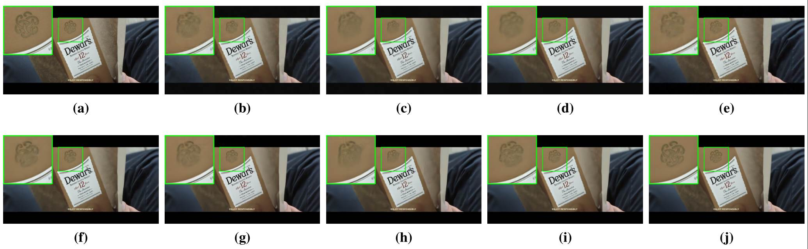
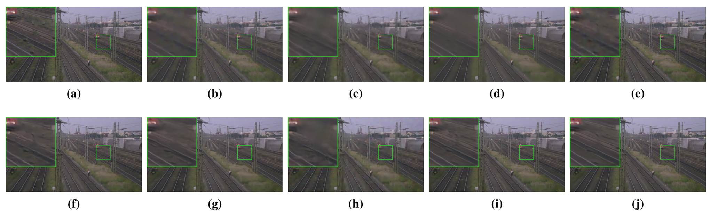
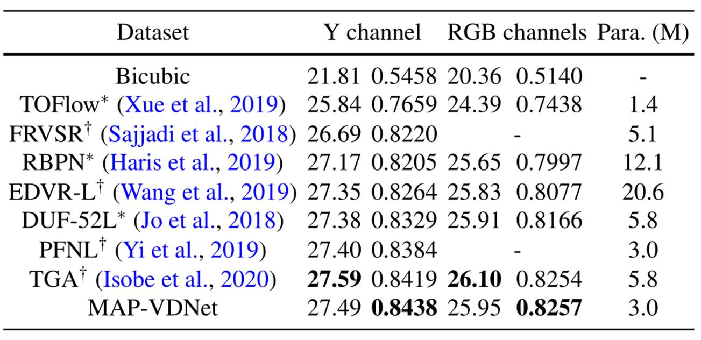
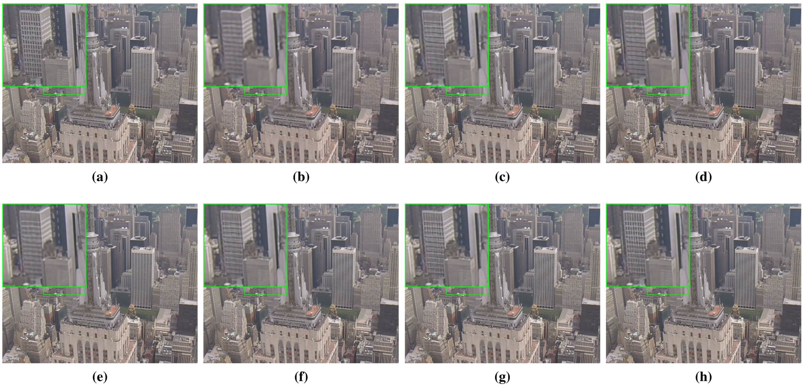

Deep Maximum a Posterior Estimator for Video Denoising
Lu Sun1 Weisheng Dong1 Xin Li2 Jinjian Wu1 Leida Li1 Guangming Shi1
1School of Artificial Intelligence, Xidian University 2West Virginia University, Morgantown, USA
 |
Figure 1. The architecture of the proposed model-guided DCNN for video denoising. (a) The overall architecture of the proposed network, (b) the architecture of the alignment module, (c) the architecture of the robust multi-frame fusion, and (d) the architecture of the encoding and decoding block of the U-net denoiser.
Abstract
Unlike the maturity of image denoising research, video denoising has remained a challenging problem. A fundamental issue at the core of the video denoising (VD) problem is how to efficiently remove noise by exploiting temporal redundancy in video frames in a principled manner. Based on the Maximum a Posterior (MAP) estimation framework and recent advances in deep learning, we present a novel deep MAP-based video denoising method named MAP-VDNet with adaptive temporal fusion and deep image prior. The proposed MAP-based VD algorithm allows computationally efficient untangling of motion estimation (frame alignment) and image restoration (denoising). To address the misalignment issue, we also present a robust multi-frame fusion strategy for predicting spatially varying fusion weights by a neural network. To facilitate end-to-end optimization, we unfold the proposed iterative MAP-based VD algorithm into a deep convolutional network named MAP-VDNet. Extensive experimental results on three popular video datasets have shown that the proposed MAP-VDNet significantly outperforms current state-of-the-art VD techniques such as ViDeNN and FastDVDnet.
 |
IJCV 2021
Citation
Lu Sun, Weisheng Dong, Xin Li, Jinjian Wu, Leida Li, Guangming Shi, " Deep Maximum a Posterior Estimator for Video Denoising ", in International Journal of Computer Vision (IJCV), 2021.
Bibtex
@article{sun2021deep,
author = {Sun, Lu and Dong, Weisheng and Li, Xin and Wu, Jinjian and Li, Leida and Shi, Guangming},
title = { Deep Maximum a Posterior Estimator for Video Denoising },
booktitle = { International Journal of Computer Vision },
year = {2021}
}
Download
Code Training data (Vimeo-90K) Testing data (DTMC-HD and ASU)
Simulation Results
Table 1. The average PSNR/SSIM video denoising results on Vimeo, ASU, and DTMC-HD dataset at different noise levels
(boldface highlights the best).
 |

Figure 2. Denoising results for a noisy frame from Vimeo test set with noise level 25. (a) Original frame; denoised frame by (b) V-BM4D [1] (31.66 dB, 0.7169), (c) RTA-LSM [2] (32.27 dB, 0.7429), (d) VNLB [3] (32.27 dB, 0.7427), (e) TOFlow [4] (35.13 dB, 0.8925), (f) TOFlow-EN (36.75dB, 0.9484), (g) ViDeNN [5] (37.65 dB, 0.9533), (h) VNLnet [6] (36.63 dB, 0.9462), (i) FastDVDnet [7] (37.25 dB, 0.9546), and (j) MAP-VDNet (39.30 dB, 0.9627).

Figure 3. Denoising results for a noisy frame of Station video of DTMC-HD test set with noise level 50. (a) Original frame; denoised frame by (b) V-BM4D [1] (30.74 dB, 0.7445), (c) RTA-LSM [2] (30.63 dB, 0.7682), (d) VNLB [3] (31.78 dB, 0.8020), (e) TOFlow [4] (31.99 dB, 0.8029), (f) TOFlow-EN (32.99 dB, 0.8391), (g) ViDeNN [5] (32.72 dB, 0.8274), (h) VNLnet [6] (30.79 dB, 0.7759), (i) FastDVDnet [7] (33.25 dB, 0.8497), and (j) MAP-VDNet (33.82 dB, 0.8608).
Table 2. The average PSNR/SSIM super-resolution results on Vid4 test set for ×4 video super-resolution (boldface highlights the best.) † denotes the results from their publications, and ∗ denotes the results from TGA [13].


Figure
4. Video superresolution results (×4 up-sampling) for a low-resolution
frame of City video of Vid4 test set. (a) Original
frame; superresolved frame by (b) TOFlow [4] (25.40 dB, 0.7081), (c) FRVSR [8]
(26.78 dB, 0.8136), (d) RBPN [9] (26.51 dB, 0.7929), (e) EDVR-L [10] (26.86 dB,
0.7995), (f) DUF-52L [11] (26.89 dB, 0.8147), (g) PFNL [12] (26.94 dB, 0.8298),
(h) MAP-VDNet (27.28 dB, 0.8369).
References
[1] Maggioni M, Boracchi G, Foi A, Egiazarian K (2012) Video denoising, deblocking, and enhancement through separable 4-d nonlocal spatiotemporal transforms. IEEE Transactions on image processing 21(9):3952�C3966.
[2] Dong W, Huang T, Shi G, Ma Y, Li X (2018a) Robust tensor approximation with laplacian scale mixture modeling for multiframe image and video denoising. J Sel Topics Signal Processing 12(6):1435�C1448.
[3] Pablo A, Jean MM (2018) Video denoising via empirical bayesian estimation of space-time patches. Journal of Mathematical Imaging and Vision 60(1):70�C93.
[4] Xue T, Chen B, Wu J, Wei D, Freeman WT (2019) Video enhancement with task-oriented flow. International Journal of Computer Vision 127(8):1106�C1125.
[5] Claus M, van Gemert J (2019) Videnn: Deep blind video denoising. In: IEEE Conference on Computer Vision and Pattern Recognition Workshops, CVPR Workshops 2019, Long Beach, CA, USA, June 16-20, 2019, pp 1843�C1852.
[6] Davy A, Ehret T, Morel JM, Arias P, Facciolo G (2019) A non-local cnn for video denoising. In: 2019 IEEE International Conference on Image Processing (ICIP), pp 2409�C2413.
[7] Tassano M, Delon J, Veit T (2020) Fastdvdnet: Towards real-time deep video denoising without flow estimation. In: 2020 IEEE/CVF Conference on Computer Vision and Pattern Recognition, CVPR 2020, Seattle, WA, USA, June 13-19, 2020, pp 1351�C1360.
[8] Sajjadi MSM, Vemulapalli R, Brown M (2018) Framerecurrent video super-resolution. In: 2018 IEEE Conference on Computer Vision and Pattern Recognition, CVPR 2018, Salt Lake City, UT, USA, June 18-22, 2018, pp 6626�C6634.
[9] Haris M, Shakhnarovich G, Ukita N (2019) Recurrent backprojection network for video super-resolution. In: IEEE Conference on Computer Vision and Pattern Recognition, CVPR 2019, Long Beach, CA, USA, June 16-20, 2019, pp 3897�C3906.
[10] Wang X, Chan KCK, Yu K, Dong C, Loy CC (2019) EDVR: video restoration with enhanced deformable convolutional networks. In: IEEE Conference on Computer Vision and Pattern Recognition Workshops, CVPR Workshops 2019, Long Beach, CA, USA, June 16-20, 2019, pp 1954�C1963.
[11] Jo Y, Oh SW, Kang J, Kim SJ (2018) Deep video superresolution network using dynamic upsampling filters without explicit motion compensation. In: 2018 IEEE Conference on Computer Vision and Pattern Recognition, CVPR 2018, Salt Lake City, UT, USA, June 18-22, 2018, pp 3224�C3232.
[12] Yi P, Wang Z, Jiang K, Jiang J, Ma J (2019) Progressive fusion video super-resolution network via exploiting nonlocal spatio-temporal correlations. In: 2019 IEEE/CVF International Conference on Computer Vision, ICCV 2019, Seoul, Korea (South), October 27 - November 2, 2019, pp 3106�C3115.
[13] Isobe T, Li S, Jia X, Yuan S, Slabaugh GG, Xu C, Li Y, Wang S, Tian Q (2020) Video super-resolution with temporal group attention. In: 2020 IEEE/CVF Conference on Computer Vision and Pattern Recognition, CVPR 2020, Seattle, WA, USA, June 13-19, 2020, pp 8005�C8014.
Contact
Lu Sun, Email: sunlu@stu.xidian.edu.cn
Weisheng Dong, Email: wsdong@mail.xidian.edu.cn
Xin Li, Email: xin.li@ieee.org
Jinjian Wu, Email: jinjian.wu@mail.xidian.edu.cn
Leida Li, Email: ldli@xidian.edu.cn
Guangming Shi, Email: gmshi@xidian.edu.cn